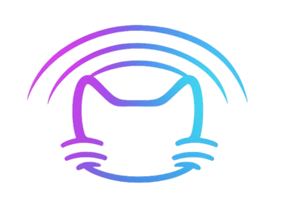

PC audio linkVirCast DirectSend audio from one PC to another.
VirCast Direct links your gaming PC and your streaming PC over your home network. Six audio lanes, found and paired in one click. Free, forever.
Two PCs usually means a mess of cables.
Line-in hum, virtual cables, and IP addresses typed by hand on both machines.
VirCast finds the other PC by name.
Open it on both PCs and press Connect PC. There's nothing to type.
Six lanes, matched on both sides.
Each color plugs into the same color on the other PC, with its own port.
Press play once. Both PCs go live.
48 kHz audio with as little as 50 ms of delay, and a meter on every lane.
Scroll to connect them